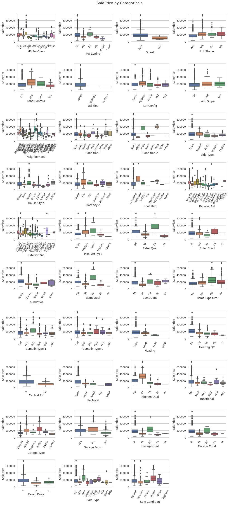

Non-parametric One-way ANOVA
Correlate categorical predictor with continuous response variable
Regression datasets often have a mix of categorical and continuous predictor variables. When the number of categorical variables is large, how do you pick the ones that are relevant to the regression(i.e. correlated to the response variable)?
The Ames Housing dataset is a property dataset containing 79 features of which 43 are categorical. The task is to predict the saleprice of houses using regression. As part of feature selection step, we would use one-way ANOVA to rank the categorical features so that we can pick the top ones.
There are two ways to do this:
The visual approach
In this approach, we plot boxplots showing the distribution of SalePrice
across the values of various categorical variables.

To see the boxplots in context, go to my Kaggle notebook here
From the boxplots, we can easily see that Paved Drive and Sale Type(among
others) have a clear influence on the SalePrice.
We can use visual approach when there are a few categorical variables. When the number of categorical variables(also called factors) is more than a handful, we need a quantitative approach to rank their influence on the target variable.
The quantitative approach
Traditional ANOVA has strict requirements in terms of the response variable distributions being Gaussian with equal variances. However, this condition is violated in our dataset.
Hence, we will use the Kruskal-Wallis test which is the non-parametric version of the one-way ANOVA.
We will follow the following steps:
- Group the dataframe based on values of each categorical variable.
- Extract the response variable column from each group.
- Use these columns to do a one-way ANOVA.
- Create a dataframe sorted by p-values then by h-score and pick the top n.
The following is a code fragment from the same notebook mentioned above.
|
|
From line 7 we iterate over the list of categorical variables, splitting the main dataframe into subframes one for each category value. From line 14, we iterate over the subframes to extract the response variable vectors(one per category value) and append it to an argument list preparatory to calling the ANOVA function. Finally, in the highlighted lines, we calculate the F-score for that particular feature and append it to a list which we later convert to a sorted dataframe from lines 22 onwards.
We would then get a table of categorical features in decreasing order of importance as seen below.
| feat | h | p | |
|---|---|---|---|
| 0 | Sale Condition | 11862.088786 | 0.000000e+00 |
| 1 | Sale Type | 11649.484168 | 0.000000e+00 |
| 2 | Paved Drive | 11426.564666 | 0.000000e+00 |
| 3 | Garage Cond | 11268.378841 | 0.000000e+00 |
| 4 | Garage Qual | 11166.915197 | 0.000000e+00 |
| 5 | Garage Finish | 11030.495476 | 0.000000e+00 |
| 6 | Garage Type | 10328.708545 | 0.000000e+00 |
| 7 | Functional | 9674.236518 | 0.000000e+00 |
| 8 | Kitchen Qual | 9645.993093 | 0.000000e+00 |
| 9 | Electrical | 8721.048294 | 0.000000e+00 |
| 10 | Central Air | 8576.530553 | 0.000000e+00 |
| 11 | Heating QC | 8441.378149 | 0.000000e+00 |
| 12 | Heating | 7935.587928 | 0.000000e+00 |
| 13 | BsmtFin Type 2 | 7924.419589 | 0.000000e+00 |
| 14 | BsmtFin Type 1 | 7901.301287 | 0.000000e+00 |
| 15 | Bsmt Exposure | 7387.120701 | 0.000000e+00 |
| 16 | Bsmt Cond | 7124.662257 | 0.000000e+00 |
| 17 | Bsmt Qual | 7061.629472 | 0.000000e+00 |
| 18 | Foundation | 6096.974304 | 0.000000e+00 |
| 19 | Exter Cond | 5375.322697 | 0.000000e+00 |
| 20 | Exter Qual | 5344.786094 | 0.000000e+00 |
| 21 | Mas Vnr Type | 4407.873986 | 0.000000e+00 |
| 22 | Exterior 2nd | 4044.730460 | 0.000000e+00 |
| 23 | Exterior 1st | 3605.698606 | 0.000000e+00 |
| 24 | Roof Matl | 3166.997822 | 0.000000e+00 |
| 25 | Roof Style | 3150.723404 | 0.000000e+00 |
| 26 | House Style | 3072.309979 | 0.000000e+00 |
| 27 | Bldg Type | 2840.675901 | 0.000000e+00 |
| 28 | Condition 2 | 2764.800185 | 0.000000e+00 |
| 29 | Condition 1 | 2740.046612 | 0.000000e+00 |
| 30 | Neighborhood | 2630.599196 | 0.000000e+00 |
| 31 | Lot Config | 1406.872181 | 9.047556e-271 |
| 32 | Land Slope | 1414.790250 | 4.264197e-270 |
| 33 | Land Contour | 1358.608290 | 5.005876e-267 |
| 34 | Utilities | 1361.113269 | 4.387615e-265 |
| 35 | Lot Shape | 1298.090210 | 1.578868e-257 |
| 36 | MS Zoning | 1047.959037 | 2.291721e-209 |
| 37 | Street | 1055.446473 | 3.057046e-209 |
| 38 | MS SubClass | 676.652485 | 2.472914e-135 |
The list throws up some surprising and not-so-surprising insights!